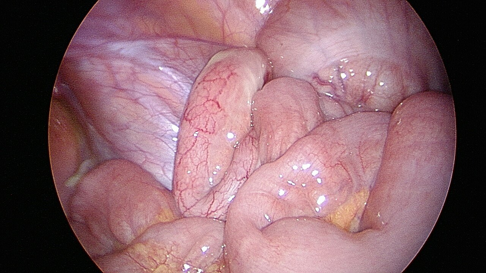
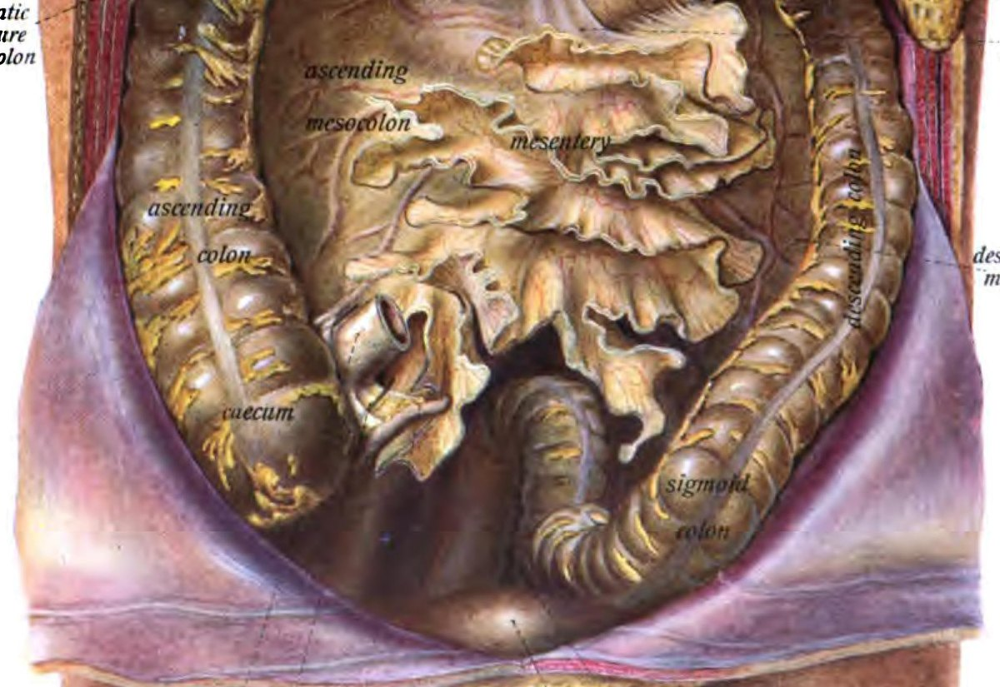
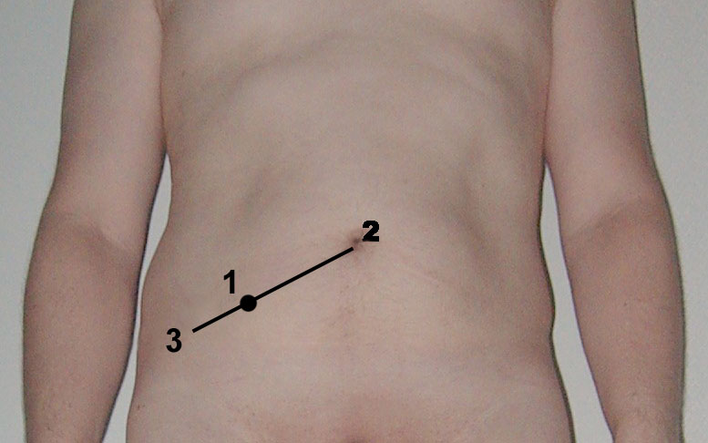
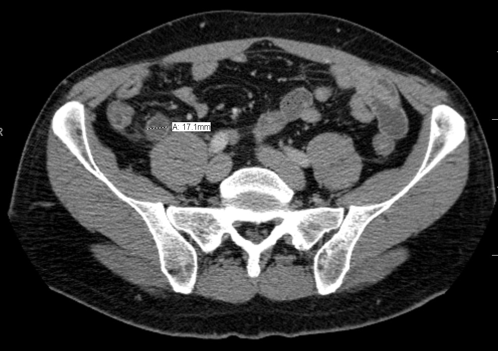
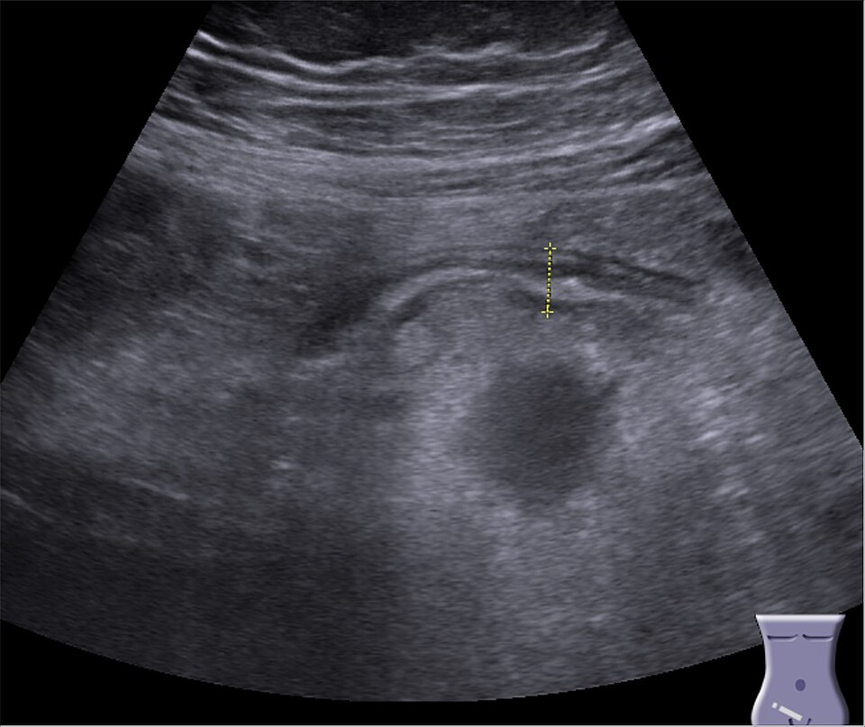
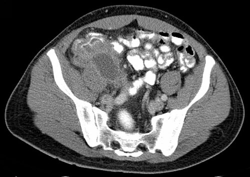
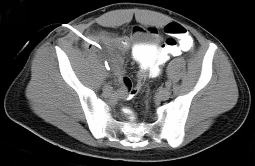

דיון מקרים: החולה עם כאבי בטן ימנית תחתונה
שלושה מטופלים בדויים מהמיון: אבחנה מבדלת (כולל גינקולוגית), מדדים, הדמיה, ניתוח או אנטיביוטיקה וטיפול באבצס
בסוף המפגש תדעו
- לבנות אבחנה מבדלת לכאב בבטן ימנית תחתונה לפי גיל ומין, כולל סיבות גינקולוגיות
- לזהות את התמונה הקלינית של דלקת התוספתן, לענות על השאלות הקליניות הקלאסיות ולהכיר את מגבלות המעבדה והמדדים
- לבחור הדמיה: CT במבוגר, אולטרסאונד בילד ובהיריון, MRI בהיריון
- להבדיל בין דלקת לא מסובכת למסובכת ולהסביר את הבחירה בין ניתוח לאנטיביוטיקה
- לנהל אבצס או פלגמון ולדעת מתי צריך מעקב אחרי גידול
- לא לפספס דלקת תוספתן בהיריון ולחשוד במוקוצלה או בגידול של התוספתן
ה-appendix ולמה הוא מודלק
- אספקת הדם: ה-appendicular artery, ענף של ה-ileocolic, מה-SMA
- החיידקים: כמו במעי הגס, פולימיקרוביאלי: E. coli (כ-65% בתרביות), Bacteroides, פסאודומונס. מכסים גראם שליליים ואנאירובים

מה עוד גר ברבע הימני התחתון?

👆 לחצו על אזור בציור כדי לקרוא עליו
בסיס ה-appendix נמצא במקום שבו נפגשות ה-taeniae coli בקצה ה-cecum. כשהקצה מאחורי ה-cecum או רטרופריטונאלי, הכאב יכול להיות במותן או בגב ולהתפתח לאט יותר. מאחור: ה-kidney וה-ureter. אבן בכליה ודלקת בדרכי השתן נותנות כאב בבטן ימנית תחתונה בשני המינים. בחולה נויטרופני: טיפליטיס
שליש הדרך מ-ASIS ל-umbilicus. כאן הרגישות הקלאסית, עם רגישות בהרפיה. הכאב מתחיל סביב ה-umbilicus (ויסצרלי) ועובר לכאן כשהקצה המודלק מגרה את ה-parietal peritoneum (סומטי)
אדניטיס מזנטריאלית (לרוב אחרי מחלה ויראלית, בילדים), דיברטיקולום של מקל, מחלת קרוהן (״שומן זוחל״ על ה-mesentery), אינטוסוספציה בילדים. את כל אלה בודקים בניתוח כשה-appendix נראה תקין
בקשישים: דיברטיקוליטיס וגידול ממאיר. sigmoid colon ארוך יכול לשכב ברבע הימני התחתון ולחקות דלקת תוספתן
באישה בגיל הפוריות: ציסטה שחלתית שנקרעה, כאב ביוץ (mittelschmerz), אנדומטריוזיס, תסביב שחלה, היריון מחוץ לרחם ומחלה דלקתית של האגן. ה-pelvic appendix נותן כאב מעל הערווה שמחקה דלקת בדרכי השתן. בגבר: תסביב אשך. הציור של Sobotta הוא של גבר: ה-bladder וה-rectum
סטודנט בן 24 עם כאב שזז
שאלות לדיון
- מה האבחנה הסבירה ומה עוד ברשימה?
- מה המשמעות של השתן?
- האם צריך הדמיה?

הקליניקה מובילה
מה תומך בדלקת תוספתן
- נדידת הכאב מה-umbilicus לבטן ימנית תחתונה: סימן אמין
- חוסר תיאבון, בחילה. גם שלשול או עצירות אפשריים
- שוכב בשקט (פריטוניטיס מקומית), דופק מהיר, חום. היעדר חום לא שולל
- רובזינג, פסואס ואובטורטור: מראים פריטוניטיס מקומית, לא אבחנה ספציפית
- פריטוניטיס מפושטת או קשיחות: חשד לניקוב
הצגת התשובה: מעבדה ומדדים
- לויקוציטוזיס ב-90% מהמקרים. ספירה תקינה ב-10%: לא שוללת
- עקבות לויקוציטים בשתן שכיחות: ה-appendix המודלק קרוב ל-bladder ול-ureter. גם קטונוריה
- CRP הרגיש ביותר מבין הסמנים, אבל לא סגולי
- מדדים: אלוורדו, מדד ילדים, AIR ו-AAS. ההנחיות ממליצות על AIR או AAS. אלוורדו טוב לשלילה אבל לא מספיק סגולי
- אף סימן או בדיקה לבד לא מנבאים. מה שקובע הוא התמונה כולה
הצגת התשובה: מה עוד ברשימה בגבר צעיר
אבן בכליה ודלקת בדרכי השתן, אדניטיס מזנטריאלית, גסטרואנטריטיס, דיברטיקוליטיס של מקל, מחלת מעי דלקתית, תסביב אשך. לבדוק גם את ה-testes
שבע שאלות שכל סטודנט/ית צריך/ה לענות עליהן
1. למה הכאב מתחיל סביב הטבור ורק אחר כך עובר?
בהתחלה ה-appendix נמתח ומגרה סיבי עצב ויסצרליים: כאב עמום ולא ממוקם סביב הטבור. כשהקצה המודלק מגרה את הצפק הפריאטלי, הכאב הופך סומטי וממוקם במקום הקצה, לרוב בבטן ימנית תחתונה
2. כאב במותן ובגב שמתפתח לאט: מה חושבים?
קצה ה-appendix מאחורי ה-cecum או רטרופריטונאלי. קצה באגן נותן כאב מעל הערווה שנראה כמו דלקת בדרכי השתן
3. רובזינג חיובי: זו האבחנה?
לא. רובזינג (כאב בבטן ימנית תחתונה בלחיצה משמאל למטה), אובטורטור (כאב בסיבוב פנימי של הירך) ופסואס (כאב ביישור הירך) מעידים רק על גירוי מקומי של הצפק
4. ספירת דם לבנה תקינה: אפשר לשחרר?
לא. אצל 10% מהחולים הספירה תקינה. מעבדה תומכת בתמונה הקלינית ולא מחליפה אותה
5. לויקוציטים בשתן: אולי זו דלקת בדרכי השתן?
עקבות של לויקוציטים בשתן לא נדירות בדלקת תוספתן, כי ה-appendix המודלק קרוב לשלפוחית ולשופכן. זה לא שולל
6. אוויר חופשי בצילום: עוד סימן לדלקת תוספתן?
לא. גם בניקוב של ה-appendix אוויר חופשי לא אופייני. חושבים על ניקוב אחר: כיב מנוקב או דיברטיקוליטיס
7. מה מצפים למצוא בבדיקה רקטלית?
לרוב היא תקינה. רגישות או גוש: קצה אגני או מורסה באגן. באישה בדיקה אגנית חשובה. רגישות בהזזת צוואר הרחם לא שוללת דלקת תוספתן
האם צריך CT?
הצגת התשובה
- כן. הדמיה מורידה את שיעור הכריתות המיותרות, שיכול להגיע ל-15%. CT מומלץ לכל מבוגר בחשד לדלקת תוספתן: לתכנון ולשלילת מחלות אחרות
- CT: רגישות 95%, סגוליות 94%. היום ממליצים על CT במינון נמוך עם חומר ניגוד
- הממצאים: קוטר מעל 7 מ״מ, דופן מעובה עם האדרה (״מטרה״), ״הסתננות״ בשומן. נוזל או אוויר סביבו מרמזים על ניקוב
- כשה-appendix לא נראה ואין דלקת: כנראה אין דלקת תוספתן
- צילום בטן: כמעט לא עוזר. צואה מאובנת נראית רק בכ-5%. אוויר חופשי לא אופייני: לחשוב על כיב או דיברטיקוליטיס

ניתוח או אנטיביוטיקה?
ב-CT: appendix 11 mm, בלי צואה מאובנת, בלי אבצס, אוויר חופשי או נוזל. דלקת לא מסובכת. המטופל שואל: ״חייבים לנתח?״
- CODA: לא נחותה באיכות החיים ב-30 יום, אבל 29% נותחו תוך 90 יום
- חזרה בשנה: כ-25% (מטא-אנליזה, COMMA)
- צואה מאובנת מעלה את הסיכון לכישלון ולסיבוכים
- סיכון לגידול שלא אובחן
- הטיפול: 10 ימים, 24 השעות הראשונות לווריד
- לפרוסקופיה עדיפה: פחות זיהומי פצע, פחות כאב, החלמה מהירה וראייה של כל הבטן
- שוכב על הגב, יד ימין פתוחה ושמאל צמודה לגוף. לרוקן bladder
- כניסה פתוחה ב-umbilicus (Hasson) ועוד שתי פתחים. המנתח והעוזר משמאל למטופל
- בסיס ה-appendix: סטפלר או לולאות. הוצאה בשקית
סטודנטית בת 23 עם כאב בבטן ימנית תחתונה
שאלות לדיון
- מה האבחנה המבדלת?
- האם רגישות ב-cervix שוללת דלקת תוספתן?
- איזו בדיקה ראשונה?
הצגת התשובה: אבחנה מבדלת
- גינקולוגי: היריון מחוץ לרחם, תסביב שחלה, ציסטה שחלתית שנקרעה, כאב ביוץ, אנדומטריוזיס (כאב מחזורי), מחלה דלקתית של האגן ואבצס טובו-אובריאלי
- לא גינקולוגי: דלקת תוספתן, אבן בכליה, דלקת בדרכי השתן
הצגת התשובה: ה-cervix
לא שוללת. רגישות בהזזת ה-cervix אופיינית למחלה דלקתית של האגן, אבל יכולה להופיע גם בדלקת תוספתן, מגירוי של איברי האגן
הצגת התשובה: הבדיקה הראשונה
β-hCG, לכל אישה בגיל הפוריות. אחריו שתן, ספירה ואולטרסאונד של הבטן והאגן. היסטוריה של וסת, מחלות מין ופעילות מינית
קודם אולטרסאונד, אחר כך לפרוסקופיה
β-hCG שלילי. באולטרסאונד: ovaries תקינות, appendix מורחב שלא נלחץ
- אולטרסאונד: בלי קרינה. ה-appendix המודלק מורחב, לא זז ולא נלחץ. רגישות 71–94%, סגוליות 81–98%, תלוי מאוד במבצע
- כשה-appendix לא נראה: הבדיקה לא חד-משמעית. סימנים עקיפים: נוזל חופשי, שומן מזנטרי מעובה, בלוטות
- לפרוסקופיה מתאימה במיוחד כאן: רואים את ה-appendix ואת איברי האגן. בהדמיה קשה להבדיל ביניהם
ובניתוח ה-appendix נראה תקין. מה עושים?
- מחפשים סיבה אחרת: terminal ileum (מקל), ה-small bowel (קרוהן), בלוטות ב-mesentery (אדניטיס), ה-ovaries וה-fallopian tubes (תסביב, אבצס, אנדומטריוזיס, ציסטה), ה-sigmoid colon. אחר כך ה-gallbladder וה-duodenum
- אם הכול תקין: לשקול ברצינות לכרות את ה-appendix. כך הוא יוצא מהאבחנה המבדלת בפעם הבאה
- קרוהן: כורתים, אלא אם הבסיס וה-cecum מעורבים (סכנת פיסטולה)

אותה מטופלת, בשבוע 20 להיריון: לא לפספס
- המצב הלא מיילדותי הדחוף השכיח ביותר בהיריון, כ-100 לכל 100,000 לידות
- בחילות שכיחות גם בהיריון תקין. החום מוחלש. ה-uterus דוחף את ה-appendix כלפי מעלה. לויקוציטוזיס קלה ו-CRP יכולים להיות תקינים בהיריון
- לחשוב גם על מצבים מיילדותיים: היפרדות שליה, צירים מוקדמים, קרע ב-uterus
בן 68 עם גוש בבטן ימנית תחתונה
שאלות לדיון
- מה רואים ב-CT?
- ניתוח מיידי?
- מה האבחנה המבדלת בגיל הזה?
הצגת התשובה
- אבצס סביב ה-appendix: דלקת מסובכת
- ניתוח מיידי ברקמה דלקתית ושבירה מסתכן באי-מציאת ה-appendix, אבצס או פיסטולה והרחבה לכריתת צקום. טיפול לא ניתוחי מצליח לרוב עם פחות סיבוכים. הנחיות WSES: בלי מומחיות לפרוסקופית מטפלים בלי ניתוח. בידיים מנוסות אפשר גם לנתח
- בקשיש: דיברטיקוליטיס, גידול ממאיר, איסכמיה של המעי, קוליטיס איסכמית, כיב מנוקב. ניקוב ה-appendix בקשישים: 40–70%

ניקוז, אנטיביוטיקה ומעקב אחרי גידול

תוספתן ריירי (מוקוצלה) וגידול ב-appendix
- מוקוצלה: appendix מורחב ומלא ריר. זה תיאור ולא אבחנה: הסיבה יכולה להיות שפירה או גידול
- נדיר. יכול להיראות בדיוק כמו דלקת תוספתן: כאב בבטן ימנית תחתונה, בחילה, חום ולויקוציטוזיס
- לרוב מתגלה במקרה: ב-CT, בניתוח או בקולונוסקופיה. גידולים נמצאים בעד 3.7% מהכריתות ולכן כל appendix נשלח לפתולוגיה
- בניתוח אי אפשר להבדיל בעין בין שפיר לממאיר: מוציאים בלי לקרוע ומחפשים ריר וגושים על הצפק. ממצא חשוד נשלח לביופסיה
- גיל מעל 40, דיכוי חיסוני, מורסה או פלגמון סביב ה-appendix
- ב-CT: קוטר מעל 2 ס״מ, דופן עבה ולא סדירה, הרחבה מוקדית, הסתיידות בדופן ומעט הסתננות בשומן שמסביב
מחקרים שכדאי להכיר
257 מטופלים שקיבלו אנטיביוטיקה. אחרי 10 שנים: חזרה מוכחת 37.8%, כריתה מצטברת 44.3%. סיבוכים: 8.5% בקבוצת האנטיביוטיקה לעומת 27.4% בקבוצת הניתוח. בלי הבדל באיכות החיים
Salminen P et al. JAMA 2026;335:1041-9599 מבוגרים. 7 ימי מוקסיפלוקסצין בפה מול יומיים לווריד ואחר כך בפה. הצלחה בשנה: 70.2% מול 73.8%. שתי הקבוצות מעל 65%, אבל אי-הנחיתות של הטיפול בפה לא הוכחה
Sippola S et al. JAMA 2021;325:353-6272 מבוגרים עם דלקת לא מסובכת ב-CT. הצלחה ב-10 ימים: 87% עם פלצבו, 97% עם אנטיביוטיקה. ההבדל לא מובהק. מחקר קטן: צריך מחקר גדול יותר
Salminen P et al. Br J Surg 2022;109:503-9כשהכריתה נעשתה תוך 24 שעות, אנטיביוטיקה לפני הניתוח לא הורידה ניקוב (8.3% לעומת 8.9%). זיהום פצע מעט נמוך יותר (1.6% לעומת 3.2%)
Jalava K et al. JAMA Surg 2025;160:745-54חמישה דברים לקחת למחלקה
- כאב שנודד מה-umbilicus לבטן ימנית תחתונה הוא הסימן האמין ביותר. ספירה תקינה לא שוללת
- באישה בגיל הפוריות: β-hCG, אנמנזה גינקולוגית ובדיקה אגנית. רגישות ב-cervix לא שוללת appendix
- מבוגר: CT. ילד או היריון: אולטרסאונד. בהיריון MRI אחריו
- לא מסובכת: ניתוח או אנטיביוטיקה, בהחלטה משותפת. מסובכת: ניתוח. אבצס: ניקוז ואנטיביוטיקה
- מעל גיל 40 אחרי טיפול שמרני באבצס: קולונוסקופיה ו-CT. כל appendix לפתולוגיה